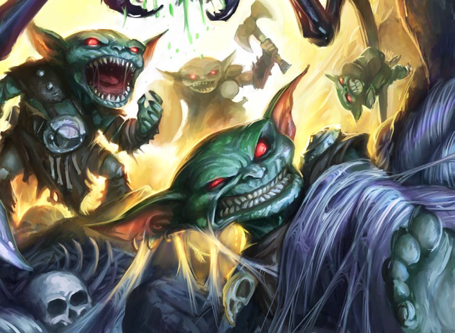
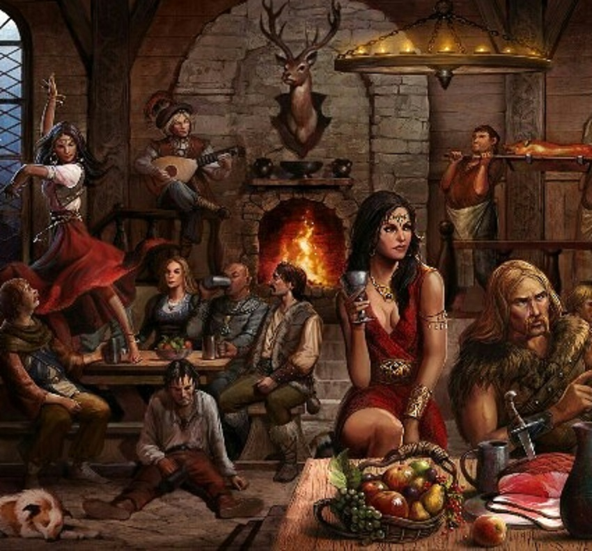
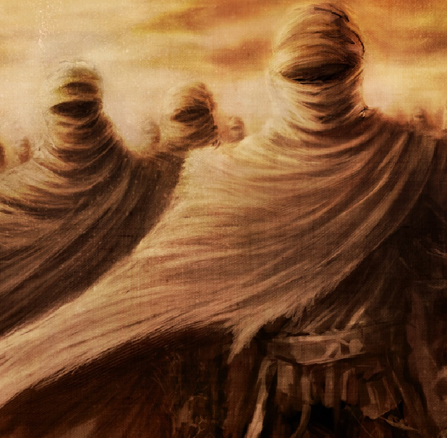
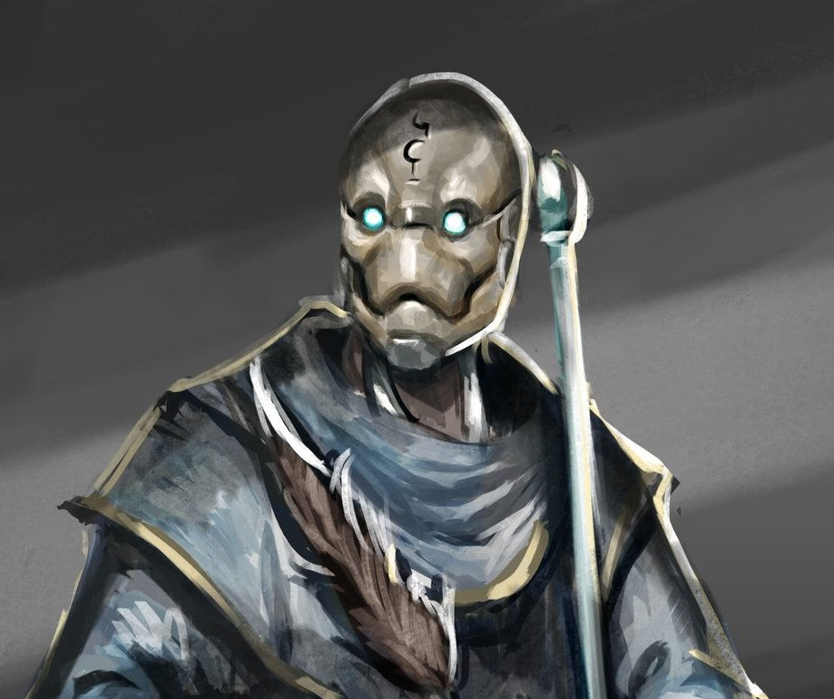
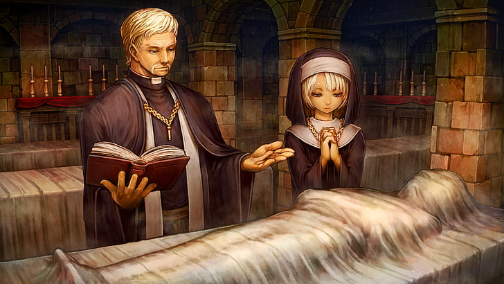

The Savage Goblin Nation
Trying to kill all humans

What follows is the first of what I hope are many stories of my adventures in Khorvaire and beyond. The last war is over. A new nation had risen out of the ashes, Darguun. I recently traveled from my home in Zilargo to the sea wall mountains to a small village. There I met a young goblin named Youtherz. He taught me many things about goblin culture and how finally having a home country has affected him and his people. I traveled with him for weeks, practicing speaking the goblin language. We made our way to Volaar Draal, seeing many burnt farms and destroyed settlements along the way. Remanants of war. One evening a coulpe of hobogoblins attemepted to rob us and Youtherz sprang into action. Like a blur he moved, quickly dispatching the two thugs. He didn't want to speak about where he had learned his fighting skills so I didn't press the issue. I knew then that there was much more to my young goblin friend to be discovered.
By: Zipp Waywocket
Ms. Evix ir'Marsha has been seen almost every night this week in the Anvil a tavern in Lower Dura, well known for it's connections to organized crime and gambling. There has been reports of Evix gambling more than what she would normally carry. Is it our tax payers money she is gambling!? Is that how she is paying to get her villa in skyway redone!! Evix should answer for these crimes!!
Evix ir'Marasha
Spending all our taxes betting

A picture of Evix drinking it up with locals from the Anvil
'Oh, her... I have seen her in here every night." said one local from Anvil. What is our head councilor doing in the roughest tavern in the city night after night. When we sent a reporter to her villa we were turned away. Evix is clearly ashamed of what she is hiding from her people. We demand to know what she is hiding. Us at the Chronicle say either out with the truth or off with her head!
Ambassor from Riedra

Ambassor from Riedra showed up just yesterday on his huge airship. We at the Chroncile have been told to spell out some rules for the citizens of Sharn to know.
- Do not talk to his servents
- The customs of Riedra are weird So be nice
- Do not touch anyone from Riedra
- If spoken to from someone of Riedra knod and smile do not speak back unless 100% needed
The Ambassor is here to write and sign the treaty that will bind our two nations together. Which may give us the upper hand if the war ever breaks out again. Riedra's airship is in the air dock is skyway itself, and is to be left alone. No one is to come near it. Decree of the Council of Sharn.
By: Rodeny Twillet
Warforged Refund Checks!

Turn in your old warforged for a 50.00.00.00 refund. The Sharn Council will be issuing refund credits to anyone turning in old warforged not in use. Please see your local Councilor for details.
Church of Adriana
Scamming people of Sharn
Local family grief stricken after their dead son was returned to them after raided by the Golden Pirates, tried to find help in the church. The family took their life savings to the church 2.50.00.00 for their son to be returned to them.Text DM0716 for clue 1. But yet the church took the money but did not bring their son back. The priest's trail will be held next week.
Anyone that is wondering old friut and veggies will be provided for throwing from your local Market "Pete's Foods"

Sports:
Hrazhak
Scores
- Rats:0-Tigers:2
- Wolves:7-Boars:3
- Bears:1-Hippos:2
SkyBlades
- Humans:12- Elves:4
- Halflings:8 - Gnomes:2
- HobGoblins:25 - Goblins:0
- Text DM:35 - ForClue:2
Six Stones
Six Stones has been BANNED by decree of The Council of Sharn